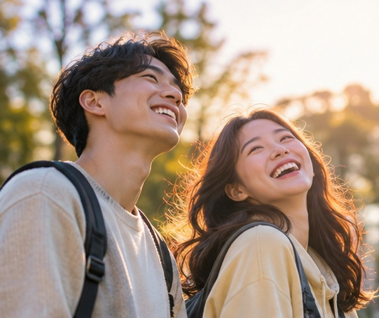
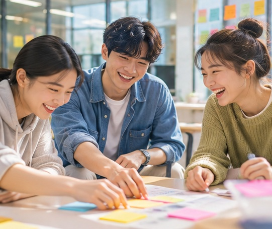
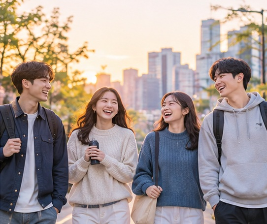

CHEONAN YOUTH 2026
청년의 내일,
청년의 내일,
천안이 함께합니다
새로운 시작이 기대되는 도시, 천안.
당신의 도전과 일상에 든든한 응원을 보냅니다.
CHEONAN · YOUTH POLICY01 / 06

A CITY FOR YOUR TOMORROW — 01
일자리 · 도전
시작하는 용기에,
시작하는 용기에,
기회를 더하다
청년도전지원사업으로 진로를 다시 그려보세요.
천안형 청년 일자리 사업으로 경험을 넓혀보세요.
CHEONAN · YOUTH POLICY02 / 06
COURAGE INTO OPPORTUNITY — 02
주거 · 정착
낯선 도시에서도,
낯선 도시에서도,
안심할 수 있도록
천안 취업 청년의 새로운 출발을 응원합니다.
청년 단기숙소 사업은 정착의 첫걸음을 도왔습니다.
CHEONAN · YOUTH POLICY03 / 06
A PLACE TO BEGIN — 03
마음 · 회복
조금 천천히 가도,
조금 천천히 가도,
괜찮아요
마음이 지칠 때, 혼자 감당하지 않아도 됩니다.
고립·은둔 청년을 위한 상담과 회복 프로그램이 있습니다.
CHEONAN · YOUTH POLICY04 / 06
YOU CAN TAKE YOUR TIME — 04
성장 · 참여
당신의 가능성이,
당신의 가능성이,
도시의 내일이 됩니다
배움과 경험이 쌓이면 일상에도 자신감이 생깁니다.
청년성장·자기계발 프로그램과 다양한 만남을 찾아보세요.
CHEONAN · YOUTH POLICY05 / 06

GROWING TOGETHER — 05CHEONAN · YOUTH POLICY06 / 06

YOUR NEXT CHAPTER — 06